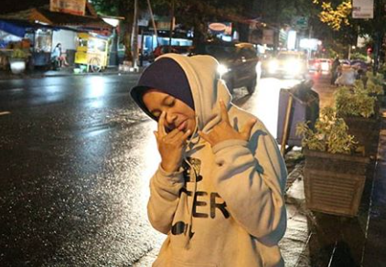

Museum Angkut merupakan museum transportasi dan tempat wisata modern yang terletak di
Kota Batu, Jawa Timur, sekitar 20 km dari Kota Malang. Museum ini terletak di kawasan
seluas 3,8 hektar di lereng Gunung Panderman dan memiliki lebih dari 300 koleksi jenis
angkutan tradisional hingga modern.
WAHANA MUSEUM ANGKUT
1. Presidential Helicopter
2. HULK, HOLLYWOOD
3. Gangster Town
4. Buckingham Palace
5. Runway 27
6. Pasar Apung Nusantara dan Indonesian Heritage Museum
ULASAN

"Top banget dan sangat recomended buat segala usia.. Ada wahana yg buat anak keci, dewasa dan orang tua. Banyak spot spot tempat foto yg menarik dan ga ada ditempat lain pastinya. Ga hanya museum, tempat ini juga bernuansa luar negeri banyak …"
"Museum Angkut merupakan museum transportasi dan tempat wisata modern yang terletak di Kota Batu, Jawa Timur,[1] sekitar 20 km dari Kota Malang. Museum ini terletak di kawasan seluas 3,8 hektar di lereng Gunung Panderman[2] dan memiliki …"
"Di setiap wahana terdapat beberapa spot foto yang sudah siap dengan petugas kameramen. Kalau kesini persiapkan fisik anda karena perjalanan dari wahana awal sampai akhir cukup panjang bikin pegel linu kaki. Berhubunga wahana banyak yang …"


ULASAN
"Top banget dan sangat recomended buat segala usia.. Ada wahana yg buat anak keci, dewasa dan orang tua. Banyak spot spot tempat foto yg menarik dan ga ada ditempat lain pastinya. Ga hanya museum, tempat ini juga bernuansa luar negeri banyak …"
"Museum Angkut merupakan museum transportasi dan tempat wisata modern yang terletak di Kota Batu, Jawa Timur,[1] sekitar 20 km dari Kota Malang. Museum ini terletak di kawasan seluas 3,8 hektar di lereng Gunung Panderman[2] dan memiliki …"
"Di setiap wahana terdapat beberapa spot foto yang sudah siap dengan petugas kameramen. Kalau kesini persiapkan fisik anda karena perjalanan dari wahana awal sampai akhir cukup panjang bikin pegel linu kaki. Berhubunga wahana banyak yang …"